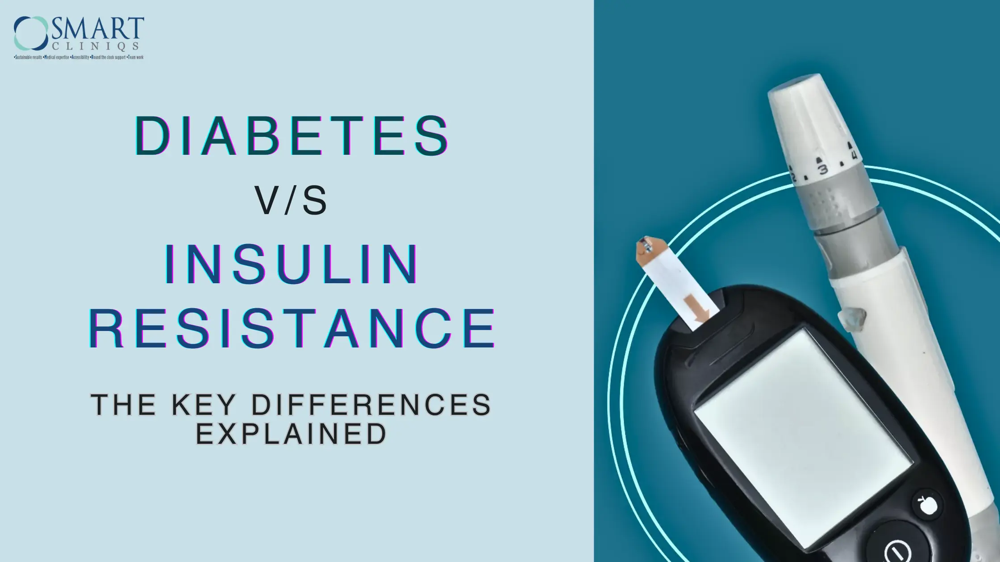

Diabetes vs. Insulin Resistance: The Key Differences Explained
In today’s healthcare landscape, few conditions command as much attention as diabetes and insulin resistance.
These metabolic disorders are not just buzzwords; they disrupt blood sugar regulation and pose significant health risks if unmanaged, affecting millions worldwide. But while these terms are often mentioned together, they are not the same.
Understanding their differences is crucial for effective management and prevention.
What is Insulin Resistance?
Insulin resistance occurs when the body’s cells become less responsive to insulin, a hormone produced by the pancreas that plays a crucial role in regulating blood sugar levels. If your cells become too resistant to insulin, it leads to elevated blood glucose levels (hyperglycemia), which, over time, leads to prediabetes and Type 2 diabetes.
Common causes of insulin resistance include obesity, a sedentary lifestyle, and genetic predisposition. Excess fat, particularly around the abdomen, can contribute significantly to the development of this condition. This is because it releases inflammatory substances that interfere with insulin’s action.
By understanding the complexities of insulin resistance, individuals can take proactive steps to improve their health and prevent its consequences.
What is Diabetes?
Diabetes is a chronic condition, characterized by high blood sugar levels due to the body’s inability to produce or utilize insulin effectively. There are two main types of diabetes:
- Type 1 Diabetes – Type 1 diabetes occurs when the pancreas produces little or no insulin, often due to an autoimmune reaction. This type is typically diagnosed in children and young adults.
- Type 2 Diabetes – Type 2 diabetes is more common and develops when the body becomes resistant to insulin or when the pancreas fails to produce sufficient insulin.
The symptoms of diabetes can include excessive thirst, frequent urination, fatigue, and blurred vision. If not managed timely and properly, diabetes can lead to serious long-term complications, including cardiovascular diseases, kidney damage, and nerve issues.
Key Differences Between Diabetes and Insulin Resistance
Insulin resistance and diabetes are closely related. However, not everyone who is insulin resistant has diabetes, and not all people with diabetes are insulin resistant.
Both conditions are tied to your body’s ability to make or use insulin, a hormone that allows glucose to enter the body’s cells from the bloodstream to be used for energy. Listed below are the characteristics of both conditions to help you differentiate between insulin resistance and diabetes:
| FEATURE | INSULIN RESISTANCE | DIABETES |
| Definition | In this condition, the cells become less responsive to insulin. | It is a chronic condition that develops when the body is not able to produce enough insulin, thereby causing a spike in blood sugar levels. |
| Causes | The risk factors involve obesity, a sedentary lifestyle, and genetics. | Type 1 diabetes is characterized as an autoimmune disorder, while type 2 diabetes is caused by obesity or insulin resistance. |
| Symptoms | The condition is often asymptomatic; however one can experience fatigue. | The condition may cause thirst, frequent urination, fatigue, and blurred vision. |
| Diagnosis | Blood tests (e.g., fasting insulin, glucose tolerance test) | Blood sugar tests (e.g., HbA1c, fasting glucose) |
| Management | The condition can be managed by modifying lifestyle and through medications (e.g., metformin) | People with diabetes need to manage their blood sugar levels with diet, exercise, and sometimes insulin therapy. |
Understanding these differences can help individuals identify their condition and seek appropriate medical guidance.
Impact on Health
The impact of diabetes and insulin resistance on health can be profound.
Insulin resistance is often a precursor to Type 2 diabetes, making its management crucial in preventing the condition. Both diabetes and insulin resistance increase the risk of several serious health complications. Individuals with diabetes may experience cardiovascular disease, nerve damage (neuropathy), kidney damage (nephropathy), and vision issues (retinopathy). Insulin resistance can also lead to similar complications if it progresses to diabetes.
Early detection and management of both conditions are vital to reducing these risks. Regular health check-ups, monitoring blood sugar levels, and lifestyle modifications can significantly impact overall health and quality of life.
How to Manage Insulin Resistance and Diabetes
Managing insulin resistance and diabetes involves a combination of lifestyle changes and, in some cases, medication. Here are actionable tips for individuals:
- Dietary Changes: Focus on low-glycemic foods that help stabilize blood sugar levels. Incorporate whole grains, lean proteins, healthy fats, and plenty of fruits and vegetables.
- Regular Physical Activity: Engage in at least 150 minutes of moderate aerobic exercise per week. Physical activity improves insulin sensitivity and aids in weight management.
- Monitoring: Regular check-ups with healthcare professionals and monitoring blood sugar levels are essential for effective management.
- Medications: For insulin resistance, medications like metformin may be prescribed. For diabetes management, insulin therapy or other oral medications may be necessary depending on the type and severity.
These strategies can significantly improve health outcomes for individuals with insulin resistance and diabetes.
Prevention Strategies
Preventing insulin resistance and diabetes involves proactive lifestyle changes. Here are some effective strategies:
- Maintain a Healthy Weight: Achieving and maintaining a healthy weight can significantly reduce the risk of developing insulin resistance and diabetes.
- Eat a Balanced Diet: A diet rich in fibre, whole grains, and healthy fats can support overall health and stabilize blood sugar levels.
- Engage in Regular Physical Activity: Regular exercise helps improve insulin sensitivity and supports weight management.
- Stress Management: Techniques such as mindfulness, meditation, and yoga can help manage stress, which is beneficial for overall health.
Taking proactive steps towards a healthier lifestyle can play a crucial role in preventing these conditions.
Why Choose Diabetes Surgery in Delhi?
Delhi has emerged as an ideal destination for diabetes care, offering various specialized options for managing diabetes and insulin resistance. Here are some reasons to consider diabetes surgery in Delhi:
- Top Hospitals and Clinics: The city boasts several leading hospitals and clinics dedicated to diabetes management, equipped with advanced technology and treatment options.
- Expertise of Healthcare Professionals: Healthcare providers in Delhi have extensive experience in managing diabetes and insulin resistance, ensuring that patients receive the best possible care.
- Comprehensive Treatment Options: From lifestyle interventions to surgical options, patients have access to a wide range of treatments tailored to their individual needs.
Choosing to undergo diabetes surgery in Delhi can lead to improved health outcomes and a better quality of life.
Choosing the Right Diabetes Surgeon in Delhi
Selecting the right diabetes surgeon is crucial for effective treatment. Here are some tips to help you find the best specialist:
- Qualifications and Experience: Look for a surgeon with specific qualifications in diabetes management and a proven track record of successful outcomes.
- Patient Reviews: Read patient testimonials and success stories to gauge the surgeon's reputation and approach to care.
- Approach to Treatment: Ensure the surgeon's treatment philosophy aligns with your expectations and health goals. A collaborative approach to care can enhance the patient experience.
Finding the right surgeon can make a significant difference in your diabetes management journey.
Meet Prof. (Dr.) Atul N.C Peters: Expert in Diabetes Surgery in Delhi
Prof. (Dr.) Atul N.C. Peters is one of the leading bariatric surgeons. Having spent more than two decades in this field, he established the Department of Bariatric, Minimal Access, and Robotic Surgery at Max Smart Super Speciality Hospital, Saket, Delhi, India as a Center of Excellence (CoE).?
Metabolic surgery has proven to be a powerful intervention not only to manage type 2 diabetes but even to 'cure' the disease. The most recent studies amply show how, for 80% of the patients, complete remission of the disease is achieved after surgery. For the remaining 20%, metabolic surgery greatly improves their condition, reducing medication intake and the use of injectable insulin.?
It is noteworthy that metabolic surgery must only be conducted in specialized centers by experienced, specifically trained surgeons to ensure maximum benefits and fewer complications associated with the surgical procedure.?
Dr. Peters is a recognized figure around the world in the?medical field for his professionalism, commitment to care, and dedication toward his patients. He is acknowledged as a "Surgeon of Excellence" by the Surgical Review Corporation. He is established as a prominent leader in this specialty for performing successful metabolic surgery for diabetes in India.?
Conclusion
Diabetes and insulin resistance are connected yet distinct. By understanding the difference, you equip yourself—and others—with the knowledge to make informed choices, take proactive steps, and potentially prevent severe complications.
Consulting healthcare professionals for personalized advice can further empower individuals to take control of their health.
In this battle for better health, awareness is your most powerful weapon. So, stay informed, stay vigilant, and take control—because your health is worth it.
Frequently Asked Questions (FAQ)
- Can insulin resistance lead to diabetes?
Yes, insulin resistance is a significant risk factor for developing Type 2 diabetes. If left unmanaged, it can lead to higher blood sugar levels and eventually diabetes.
- How do I know if I have insulin resistance?
Common indicators of insulin resistance include difficulty losing weight, fatigue, and high blood sugar levels. Diagnostic tests, such as fasting insulin and glucose tolerance tests, can confirm the condition.
- What are the best lifestyle changes to prevent diabetes?
Maintaining a healthy weight, eating a balanced diet rich in fiber, engaging in regular physical activity, and managing stress are key lifestyle changes that can help prevent diabetes.
- Are there specific tests for diagnosing insulin resistance?
Yes, tests such as fasting insulin levels, glucose tolerance tests, and HbA1c and HOMA-IR levels can help diagnose insulin resistance and assess blood sugar control.